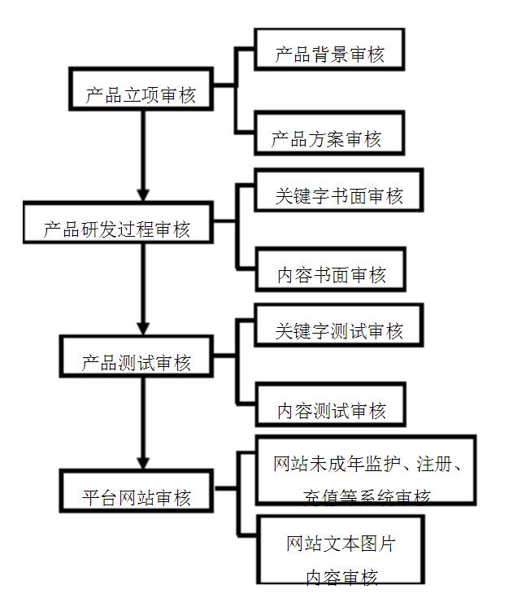

一、 基本原则
1. 依照《网络文化经营单位内容自审管理办法》的有关要求制定本制度；
2. 设立专门岗位及专人承担产品内容自审工作，且承担该工作的工作人员须取得自审人员岗位资格；
3. 至少有3名获得自审人员岗位资格（取得《内容审核人员证书》）的工作人员，其中一人需为企业负责经营工作的主要领导（公司副总经理以上职务者），该领导为内容审查管理工作的主要负责人；
4. 企业自审必须由2名以上审核人员实施，审核人员填写审核意见并签字后，报本单位内容审查管理工作的主要负责人复核签字。
二、 目的
本规定用于规范网络文化产品及服务内容（包括但不限于产品的宣传推广，活动策划）的企业自审工作，明确本企业按照《网络文化经营单位内容自审管理办法》开展相关工作的职责、流程、标准以及责任追究办法。
三、 组织架构
明确建立自审部门，岗位设置具体人员配备（有至少3名负责内容审核工作的责任人）。
四、 审查人员职责
1. 应掌握内容审核的政策法规和相关知识；
2. 能独立表达审核意见；
3. 以最终保证本企业的产品和服务的合法性和合规性为目的，对在自身工作中发现的违法违规的产品及服务内容进行记录并提请终止，作出提交修改，督促修改，复审等审核意见，重大问题向成都市文化广电新闻出版局报告；
4. 负责保管审查记录；
5. 对产品及服务内容的合法合规性不能准确判断的，可向成都市文化广电新闻出版局申请行政指导；
6. 每年应至少参加1次由成都市文化广电新闻出版局组织的业务培训；
7. 组织内部培训工作，对企业开发、运营人员进行内容审查方面的培训。
五、 审查流程
1. 对企业自主研发的产品，在研发阶段进行培训，对故事背景、美术素材等进行初步的筛查；
2. 自审人员在产品公测之前，依据内容审查的相关规定，对产品及其服务内容（包括宣传推广和活动策划）进行审查，对违法违规的内容进行记录，并签发初审意见；
3. 对初审有问题的产品，退回研发企业或部门进行修改，并对修改后的内容进行复查；
4. 对内容的合法合规性不能准确判断的，应向成都市文化广电新闻出版局申请行政指导；
5. 对复查仍有问题的，应按照上述第2-4项规定的内容重新进行审核；
6. 在产品公测前，对产品客户端、公司官网、产品官网进行审查，审查内容包括证照使用、实名注册、实名信息补填、用户协议必备条款、适龄提示、家长监护工程等内容，合格后方可公测；
7. 对审查完成的产品，自审人员提出同意进行公测的意见并签字确认，上交内容审查管理工作的主要负责人；
8. 内容审查管理工作的主要负责人签字确认后，根据规定要求，向文化行政管理部门提交产品备案；
9. 日常对产品和服务内容进行监督检查，包括产品版本更新后的内容、产品客户端、公司官网、产品官网、宣传推广和活动策划等各个方面和环节，发现问题提交检查意见，报本企业内容审查管理工作主要负责人；
10. 自审人员的所有审查意见应归档留存，保存时间不少于两年；
11. 自审工作流程图。
六、 审查标准
网络游戏不得含有以下内容：
１． 违反宪法规定的基本原则；
２． 危害国家统一、主权或者领土完整的；
３． 泄露国家秘密的、危害国家安全或者损害国家荣誉和利益的；
４． 煽动民族仇恨、民族歧视、破坏民族团结，或者侵害民族风俗、习惯的；
５． 宣扬邪教、迷信的；
６． 散布谣言，扰乱社会秩序，破坏社会稳定的；
７． 宣扬淫秽、色情、赌博、暴力、或者教唆犯罪的；
８． 侮辱、诽谤他人，侵害他人合法权益的；
七、 责任追究
各企业必须明确企业内部对审核人员、开发人员以及运营人员的内容审核责任追究规定。
对审查人员未能在审查过程中发现问题的，予以口头警告；
对审查人员发现问题，但开发人员拒不修改的，予以书面警告；
对审查人员发现问题，但开发人员修改，审查通过后自行予以恢复的，予以扣除当月奖金；
对运营人员在运营过程中未通知审查人员，造成不良后果，而审查人员也未及时发现的，予以扣除当月奖金,累计满三次运营人员予以调离岗位, 审查人员予以取消审查资格并调离岗位;
其他造成不良后果的情形的，予以书面警告。
审核流程图：

附件一：
| 姓名 |
职务 |
内容审核员证 |
审查工作 |
| 任珂珂 |
创始人 |
内容审核员证 |
审查工作 |
| 王锐 |
CEO |
内容审核员证 |
审查工作 |
| 周龙 |
技术主管 |
内容审核员证 |
审查工作 |
成都晚八点文化传播有限公司
2018年1月1日